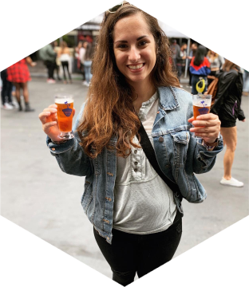
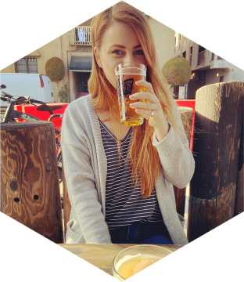

The Meeple's Beer, a group founded by Kristina Macias and Victoria Ditmer, was created to provide a space to discuss their favorite games and beer with the tabletop gaming community. The group was established in 2020 during the 2020 COVID-19 Pandemic. As the Pandemic forced many people indoors, Kristina and Victoria took to this new board gaming hobby. The hobby has provided an activity in which they can bond over and learn. As their game collection grows, they hope they can provide thoughtful reviews and conversations about their favorite games to play.
|  |
About Kristina
Contact Information |
|  |
About Victoria
Contact Information |
| Game Genre | Meeple's Beer Score |
|---|---|
| Abstract & Strategy | 🎲🎲🎲🎲🎲 |
| 4x | 🎲🎲🎲🎲🎲 |
| Area Control | 🎲🎲🎲🎲 |
| Roll & Write | 🎲🎲 |
| Campaign & Legacy | 🎲🎲🎲🎲 |
| Engine Builder | 🎲🎲🎲 |
| Deck Building | 🎲🎲🎲🎲 |
| Dungeon Crawler | 🎲🎲🎲🎲🎲 |
| Worker Placement | 🎲🎲🎲🎲🎲 |
| Cooperative | 🎲🎲🎲🎲 |